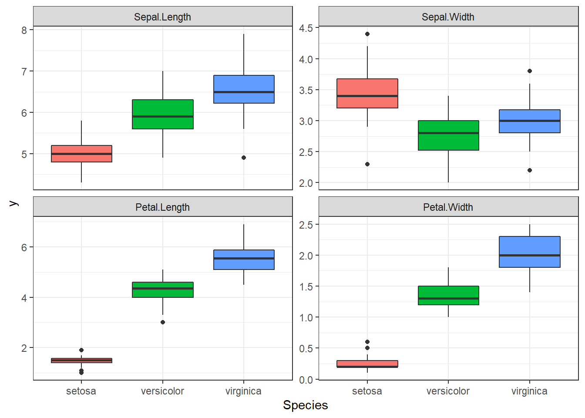
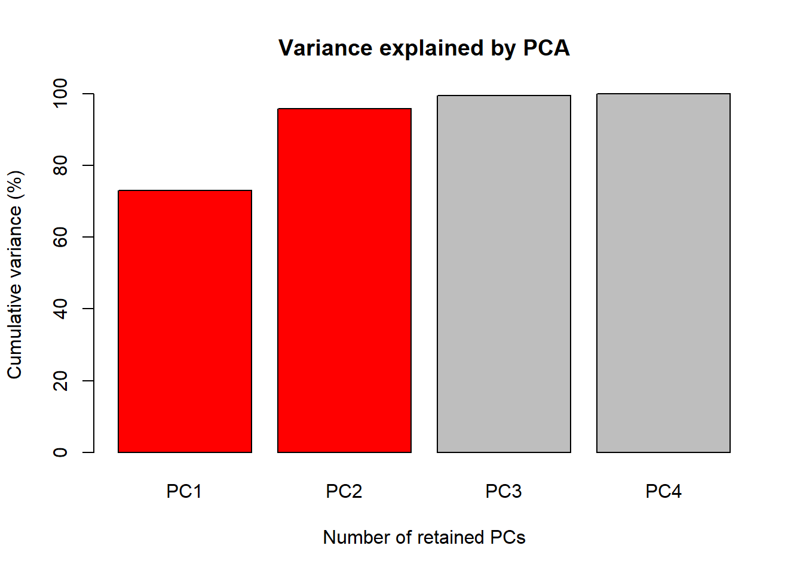
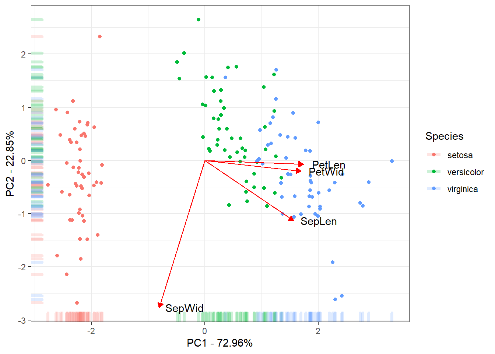

Last updated: 2022-03-24
Checks: 7 0
Knit directory: GSworkshopNG/
This reproducible R Markdown analysis was created with workflowr (version 1.7.0). The Checks tab describes the reproducibility checks that were applied when the results were created. The Past versions tab lists the development history.
Great! Since the R Markdown file has been committed to the Git repository, you know the exact version of the code that produced these results.
Great job! The global environment was empty. Objects defined in the global environment can affect the analysis in your R Markdown file in unknown ways. For reproduciblity it’s best to always run the code in an empty environment.
The command set.seed(20220324) was run prior to running the code in the R Markdown file. Setting a seed ensures that any results that rely on randomness, e.g. subsampling or permutations, are reproducible.
Great job! Recording the operating system, R version, and package versions is critical for reproducibility.
Nice! There were no cached chunks for this analysis, so you can be confident that you successfully produced the results during this run.
Great job! Using relative paths to the files within your workflowr project makes it easier to run your code on other machines.
Great! You are using Git for version control. Tracking code development and connecting the code version to the results is critical for reproducibility.
The results in this page were generated with repository version 506b27b. See the Past versions tab to see a history of the changes made to the R Markdown and HTML files.
Note that you need to be careful to ensure that all relevant files for the analysis have been committed to Git prior to generating the results (you can use wflow_publish or wflow_git_commit). workflowr only checks the R Markdown file, but you know if there are other scripts or data files that it depends on. Below is the status of the Git repository when the results were generated:
Ignored files:
Ignored: .Rproj.user/
Note that any generated files, e.g. HTML, png, CSS, etc., are not included in this status report because it is ok for generated content to have uncommitted changes.
These are the previous versions of the repository in which changes were made to the R Markdown (analysis/PCA.Rmd) and HTML (docs/PCA.html) files. If you’ve configured a remote Git repository (see ?wflow_git_remote), click on the hyperlinks in the table below to view the files as they were in that past version.
| File | Version | Author | Date | Message |
|---|---|---|---|---|
| html | 506b27b | lfdelgadom | 2022-03-24 | Build site. |
| Rmd | 7eae622 | lfdelgadom | 2022-03-24 | PCA HTML created |
| html | 7eae622 | lfdelgadom | 2022-03-24 | PCA HTML created |
data <- irisLet’s prepare this prepare this data to plot some boxplot of all the four traits, for that you will need the function melt of the reshape2 package and the tidyverse package. The reshape2 is an R package written by Hadley Wickham that makes it easy to transform data between wide and long formats.
library(reshape2); library(tidyverse)Warning: package 'reshape2' was built under R version 4.1.2Warning: package 'tidyverse' was built under R version 4.1.2-- Attaching packages --------------------------------------- tidyverse 1.3.1 --v ggplot2 3.3.5 v purrr 0.3.4
v tibble 3.1.6 v dplyr 1.0.8
v tidyr 1.2.0 v stringr 1.4.0
v readr 2.1.2 v forcats 0.5.1Warning: package 'ggplot2' was built under R version 4.1.2Warning: package 'tibble' was built under R version 4.1.2Warning: package 'tidyr' was built under R version 4.1.2Warning: package 'readr' was built under R version 4.1.2Warning: package 'purrr' was built under R version 4.1.2Warning: package 'dplyr' was built under R version 4.1.2Warning: package 'stringr' was built under R version 4.1.2Warning: package 'forcats' was built under R version 4.1.2-- Conflicts ------------------------------------------ tidyverse_conflicts() --
x dplyr::filter() masks stats::filter()
x dplyr::lag() masks stats::lag()dataMelted <- data %>% reshape2::melt(data = ., # makes the same operation that makes
id.vars = "Species", # pivot_longer
variable.name = "trait",
value.name = "y")
head(dataMelted) Species trait y
1 setosa Sepal.Length 5.1
2 setosa Sepal.Length 4.9
3 setosa Sepal.Length 4.7
4 setosa Sepal.Length 4.6
5 setosa Sepal.Length 5.0
6 setosa Sepal.Length 5.4Great!, now we have the data at the format to make boxplot from all traits at the same code line. so lets keep moving. For that we will use ggplot2 package.
dataMelted %>% ggplot(aes(x = Species, y = y, fill = Species)) +
geom_boxplot() + facet_wrap(~trait, scales = "free_y") +
theme_bw() +
theme(legend.position = "none")
Great data, we can see a lot of differences between the Species for these traits. It seems that we may have some correlation between Petal Length and Width. We also have different amplitude for these traits this will certainly results in different phenotypic variance between the traits, so we need to scale these traits before the PCA.
DataSc <- data %>% select(-Species) %>%
scale(x = ., center = TRUE, scale = TRUE) %>%
as.data.frame() %>%
mutate(Species = data$Species)
head(DataSc) Sepal.Length Sepal.Width Petal.Length Petal.Width Species
1 -0.8976739 1.01560199 -1.335752 -1.311052 setosa
2 -1.1392005 -0.13153881 -1.335752 -1.311052 setosa
3 -1.3807271 0.32731751 -1.392399 -1.311052 setosa
4 -1.5014904 0.09788935 -1.279104 -1.311052 setosa
5 -1.0184372 1.24503015 -1.335752 -1.311052 setosa
6 -0.5353840 1.93331463 -1.165809 -1.048667 setosaSo let’s proceed for the PCA analysis, here we will use the prcomp function from R status package, so no need to call any package.
PCA <- prcomp(DataSc %>% select(-Species))Let’s save the important results in objects, so we could make some graphs with them.
1. Accumulate percent of the total phenotypic variance explained by the principal components (PC)
Perc <- 100 * PCA$sdev^2 / sum(PCA$sdev^2)
PercAc <- as.vector(rep(NA, times = length(Perc)))
for(i in 1:length(Perc)) {
PercAc[i] <- sum(Perc[1:i])
names(PercAc)[i] <- i
}
names(PercAc) <- c("PC1", "PC2", "PC3", "PC4")
PercAc PC1 PC2 PC3 PC4
72.96245 95.81321 99.48213 100.00000 2. Correlations of the traits with the principal components (PC)
CorTraits <- PCA$rotation
rownames(CorTraits) <- c("SepLen", "SepWid", "PetLen", "PetWid")
CorTraits PC1 PC2 PC3 PC4
SepLen 0.5210659 -0.37741762 0.7195664 0.2612863
SepWid -0.2693474 -0.92329566 -0.2443818 -0.1235096
PetLen 0.5804131 -0.02449161 -0.1421264 -0.8014492
PetWid 0.5648565 -0.06694199 -0.6342727 0.5235971LabelsPCA <- CorTraits %>% as.data.frame %>%
mutate(PC1 = PC1 + 0.15, .keep = "unused")3. Individuals scores for the principal components (PC)
ScoresSpecies <- PCA$x %>%
as.data.frame %>%
mutate(Species = data$Species)
head(ScoresSpecies) PC1 PC2 PC3 PC4 Species
1 -2.257141 -0.4784238 0.12727962 0.024087508 setosa
2 -2.074013 0.6718827 0.23382552 0.102662845 setosa
3 -2.356335 0.3407664 -0.04405390 0.028282305 setosa
4 -2.291707 0.5953999 -0.09098530 -0.065735340 setosa
5 -2.381863 -0.6446757 -0.01568565 -0.035802870 setosa
6 -2.068701 -1.4842053 -0.02687825 0.006586116 setosaGreat we got what we need to create our figures.
The first figure will be a barplot of the accumulated variances explained by the PC. We will use the color red the PC selected to use at the next figures.

R markdown allows us to hide the code that create the figure, this could be done adding the argument echo = FALSE inside the curly brackets at the chunk. Using echo argument will print just the result of you chunk, link below.
The last figure will be a scatter plot of the individuals with their score for the first two PCs with the correlation of the traits with the first two PCs.
ggplot(data = ScoresSpecies, aes(x = PC1, y = PC2, color = Species)) +
geom_point() + geom_rug(alpha = 0.2, size = 1.5) +
geom_segment(mapping = aes(x = 0, xend = 3*PC1, y = 0, yend = 3*PC2),
colour = "red",
data = CorTraits %>% as.data.frame,
arrow = arrow(type = "closed",
length = unit(0.2,units = "cm"))) +
geom_text(mapping = aes(x = PC1*3, y = PC2*3, label = rownames(LabelsPCA)),
data = LabelsPCA, colour = "black") +
theme_bw() +
xlab(paste("PC1 - ", round(Perc[1], digits = 2), "%", sep = "")) +
ylab(paste("PC2 - ", round(Perc[2], digits = 2), "%", sep = ""))
This is the final results of the PC. Mostly of the variance explained by the 1˚PC is due to the between species Setosa Vs Versicolor and Virginica. The 2˚PC just explain variance within the species. Also the traits Petal Length, Petal Width and Sepal Length could be used to discriminate the species.
sessionInfo()R version 4.1.1 (2021-08-10)
Platform: x86_64-w64-mingw32/x64 (64-bit)
Running under: Windows 10 x64 (build 19044)
Matrix products: default
locale:
[1] LC_COLLATE=Spanish_Colombia.1252 LC_CTYPE=Spanish_Colombia.1252
[3] LC_MONETARY=Spanish_Colombia.1252 LC_NUMERIC=C
[5] LC_TIME=Spanish_Colombia.1252
attached base packages:
[1] stats graphics grDevices utils datasets methods base
other attached packages:
[1] forcats_0.5.1 stringr_1.4.0 dplyr_1.0.8 purrr_0.3.4
[5] readr_2.1.2 tidyr_1.2.0 tibble_3.1.6 ggplot2_3.3.5
[9] tidyverse_1.3.1 reshape2_1.4.4
loaded via a namespace (and not attached):
[1] Rcpp_1.0.8 lubridate_1.8.0 assertthat_0.2.1 rprojroot_2.0.2
[5] digest_0.6.29 utf8_1.2.2 R6_2.5.1 cellranger_1.1.0
[9] plyr_1.8.6 backports_1.4.1 reprex_2.0.1 evaluate_0.15
[13] highr_0.9 httr_1.4.2 pillar_1.7.0 rlang_1.0.1
[17] readxl_1.3.1 rstudioapi_0.13 whisker_0.4 jquerylib_0.1.4
[21] rmarkdown_2.13 labeling_0.4.2 munsell_0.5.0 broom_0.7.12
[25] compiler_4.1.1 httpuv_1.6.5 modelr_0.1.8 xfun_0.30
[29] pkgconfig_2.0.3 htmltools_0.5.2 tidyselect_1.1.2 workflowr_1.7.0
[33] fansi_1.0.2 crayon_1.5.0 tzdb_0.2.0 dbplyr_2.1.1
[37] withr_2.5.0 later_1.3.0 grid_4.1.1 jsonlite_1.8.0
[41] gtable_0.3.0 lifecycle_1.0.1 DBI_1.1.2 git2r_0.30.1
[45] magrittr_2.0.2 scales_1.1.1 cli_3.2.0 stringi_1.7.6
[49] farver_2.1.0 fs_1.5.2 promises_1.2.0.1 xml2_1.3.3
[53] bslib_0.3.1 ellipsis_0.3.2 generics_0.1.2 vctrs_0.3.8
[57] tools_4.1.1 glue_1.6.2 hms_1.1.1 fastmap_1.1.0
[61] yaml_2.3.5 colorspace_2.0-3 rvest_1.0.2 knitr_1.37
[65] haven_2.4.3 sass_0.4.0